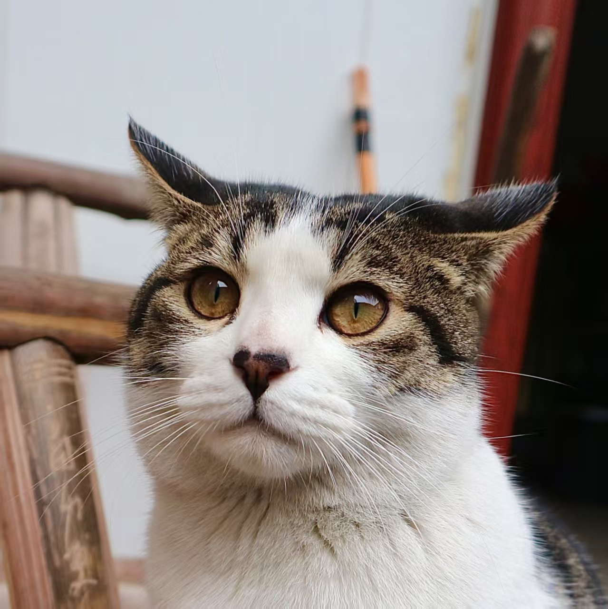
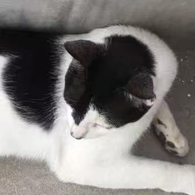
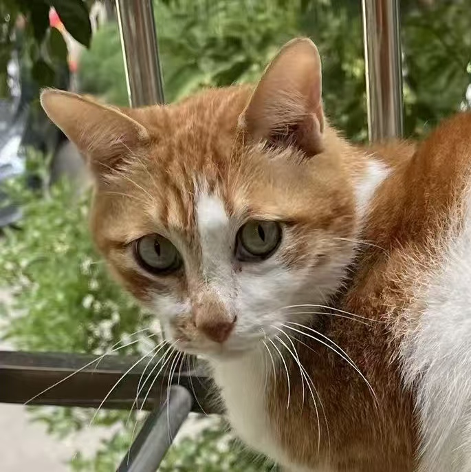
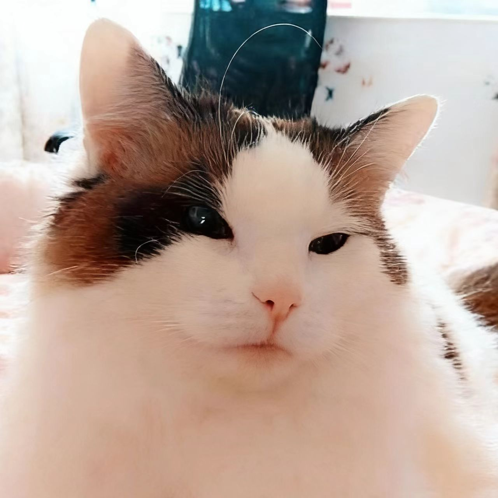

🐱🔍 猫猫警长探案集 · 消失的猫粮
墨团·华生 | 协助糖豆·福尔摩斯找出真凶
🐾 询问对象

福呆呆
狸花 · 温柔乖巧

黄鼠狼
奶牛 · 疯癫活泼

喵喵
橘猫 · 高傲敏锐

雪莉
布偶 · 优雅知性
🔎 结束调查 · 开始推理
🌅 清晨，粮仓一片狼藉，猫粮散落一地。看来有猫在夜深猫静的时刻谋杀了猫粮！
橘猫糖豆跳到高处：“各位！这案子非我糖豆·福尔摩斯莫属！我和助手墨团·华生将在一日内揪出真凶！”
糖豆：“所以，就拜托你了，华生，去询问其他猫关于这个案件的线索吧。”
墨团：“....什么嘛，搞了半天还不是我探案你偷懒...”
🐾 点击左侧猫咪开始调查，收集线索后点击【结束调查】。
✨ 点击左侧猫咪头像开始询问 ✨